VEYRA
Time, taken apart.
Calibre V1. 214 parts, laid bare.
VEYRA
Calibre V1. 214 parts, laid bare.
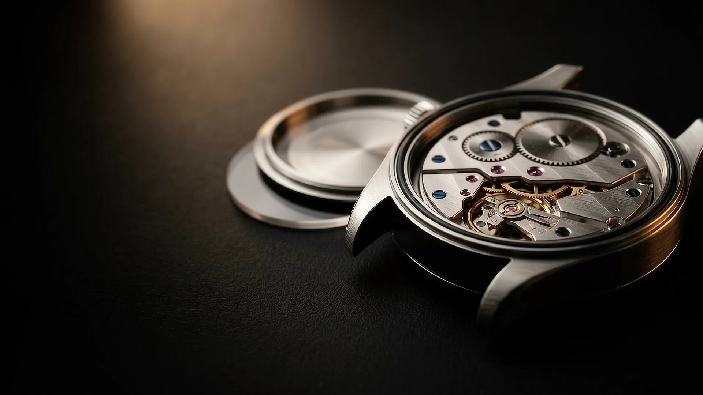
01 / Case
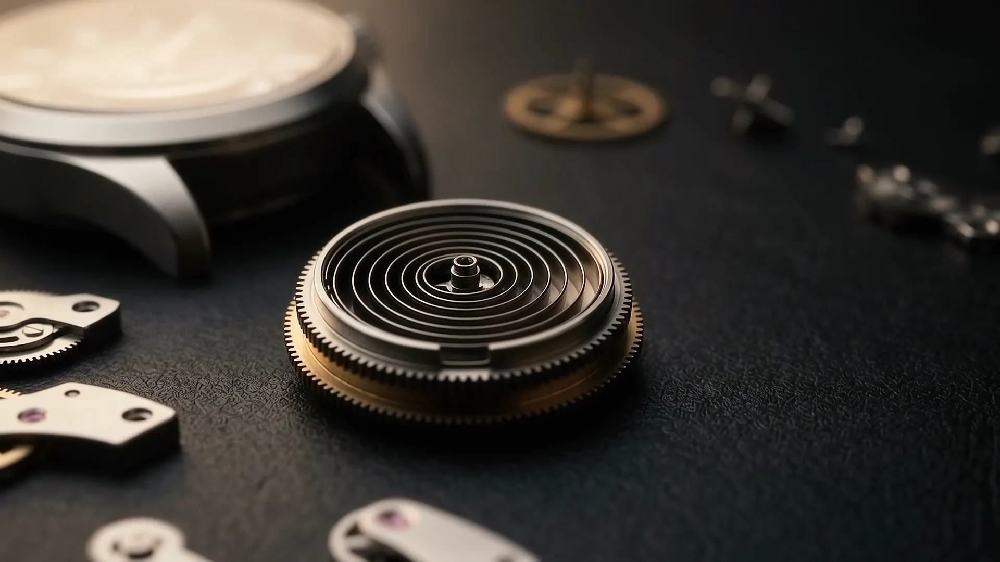
02 / Barrel
A spring 32 cm long, wound into 11 mm.
0h
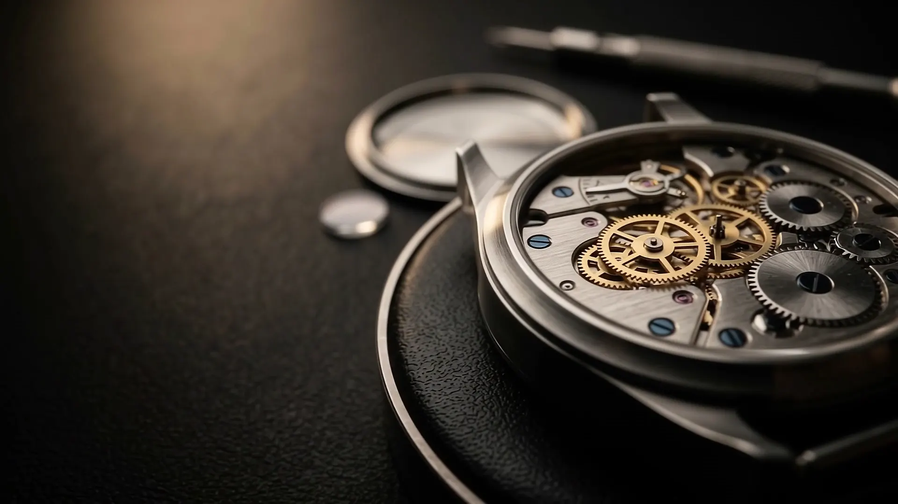
03 / Gear train
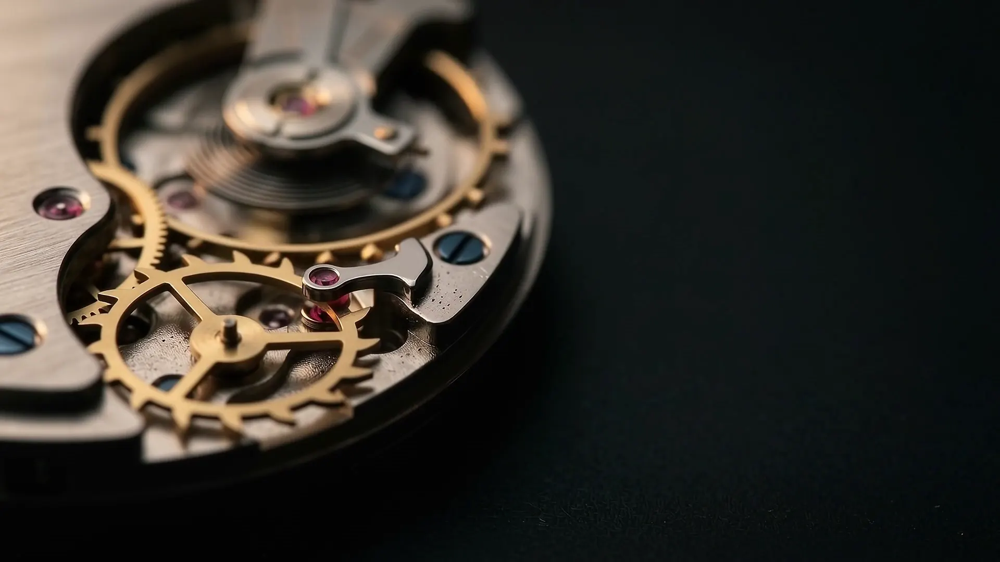
04 / Escapement
691,200 a day.
0
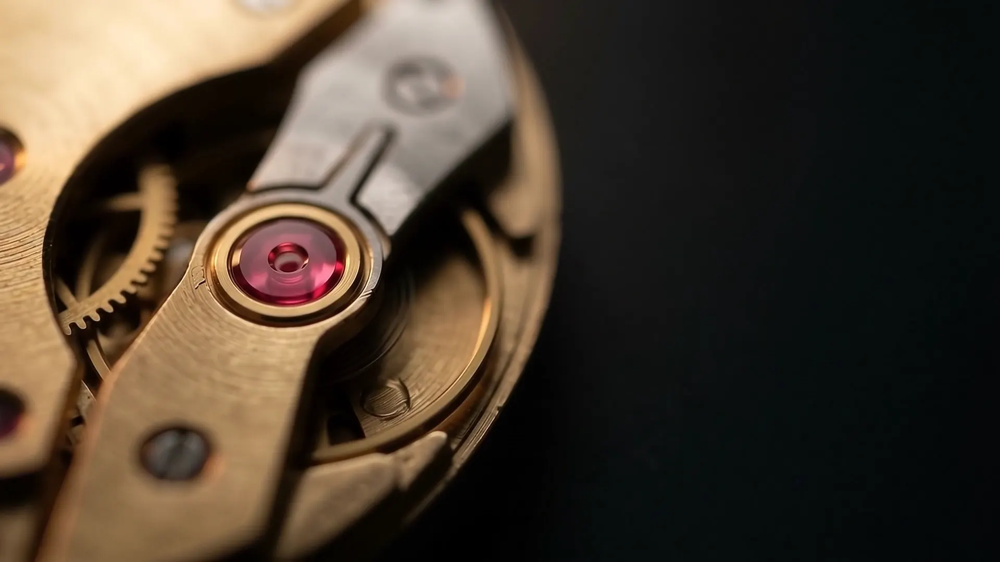
05 / Jewels
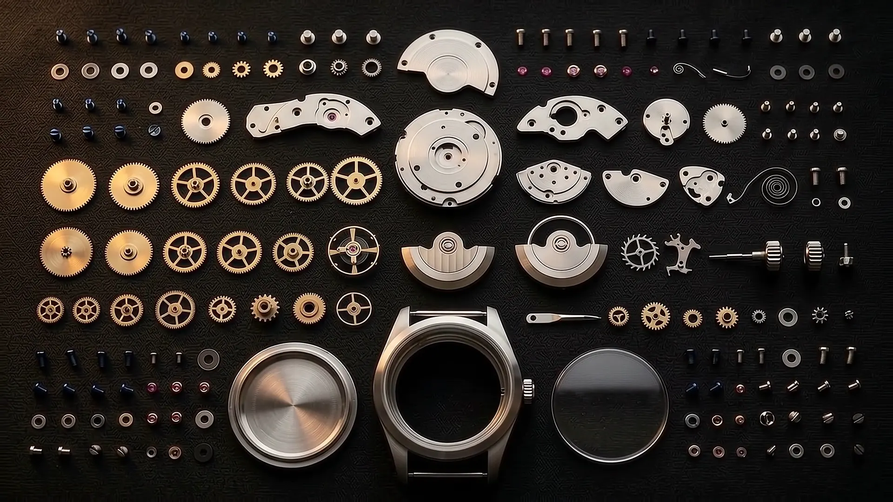
214 parts. Every one accounted for.
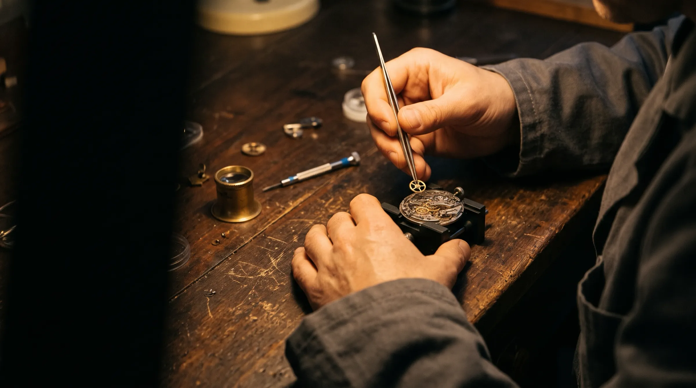
Anouk Ferrand assembles every V1 she signs. Three weeks, from loose parts to a running watch, at one bench in Le Sentier.
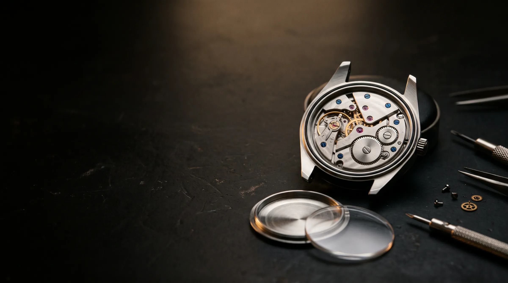
Week one
Every bridge is bevelled and polished by hand, including the edges no one is meant to see.
Week two
214 parts, fitted and oiled in order. The barrel goes in first.
Week three
Timed in six positions over five days, then cased.
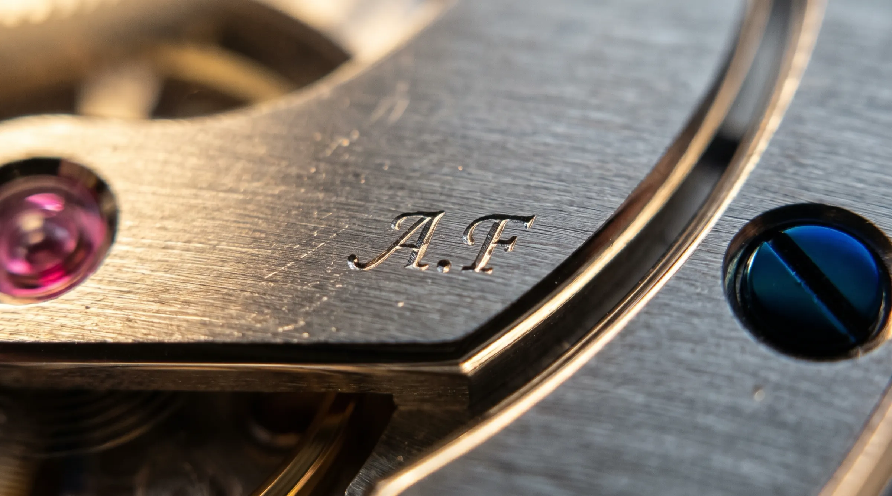
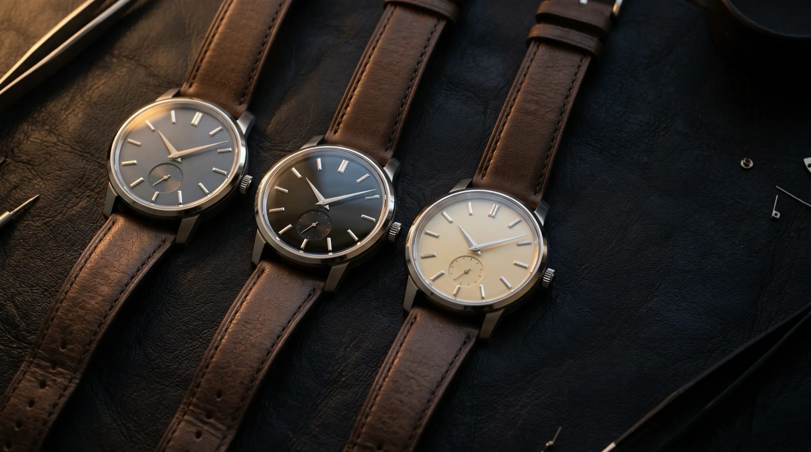
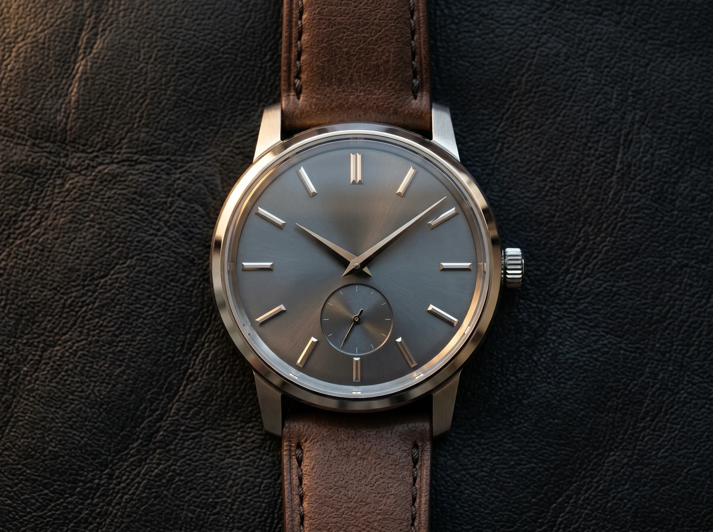
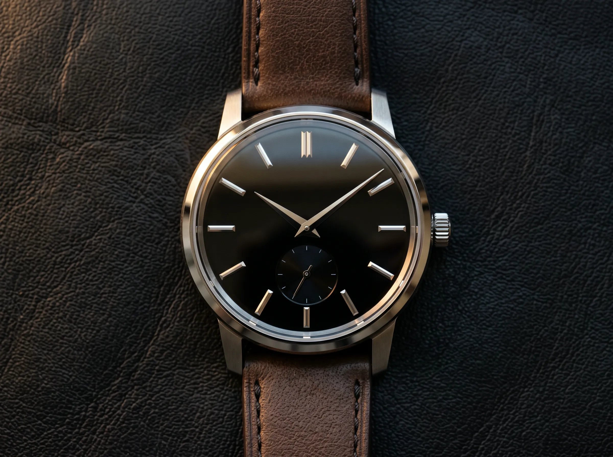
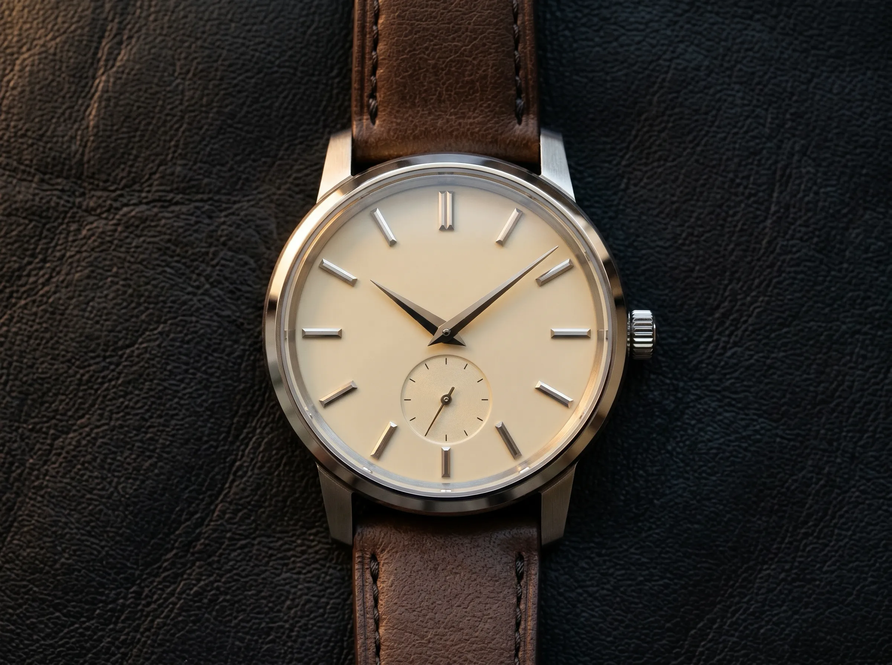
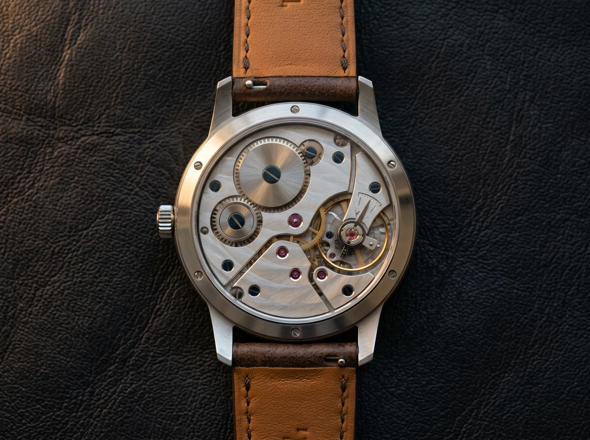
Grey as the bench it was built on.
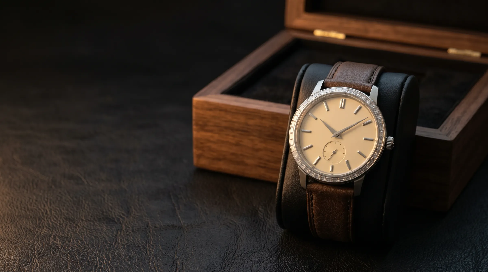
Atelier piece. Shown only in person.